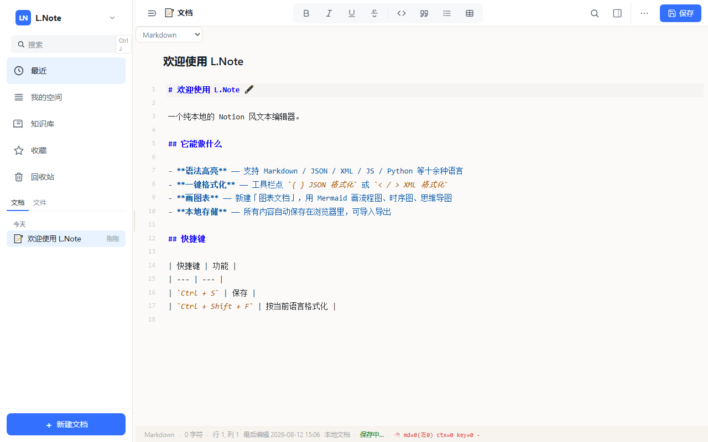
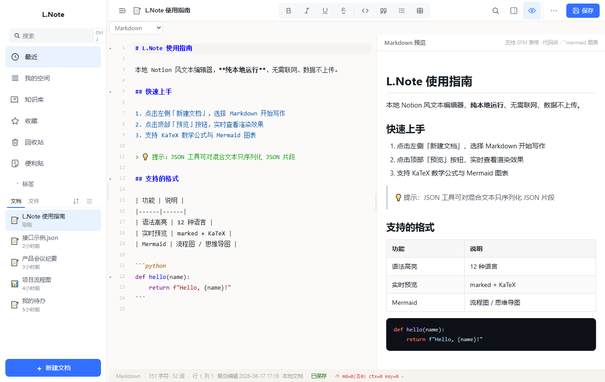
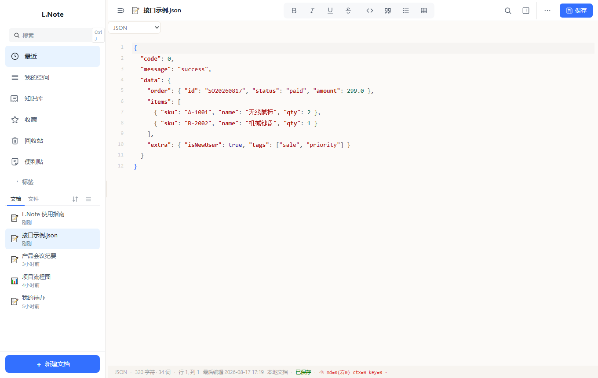
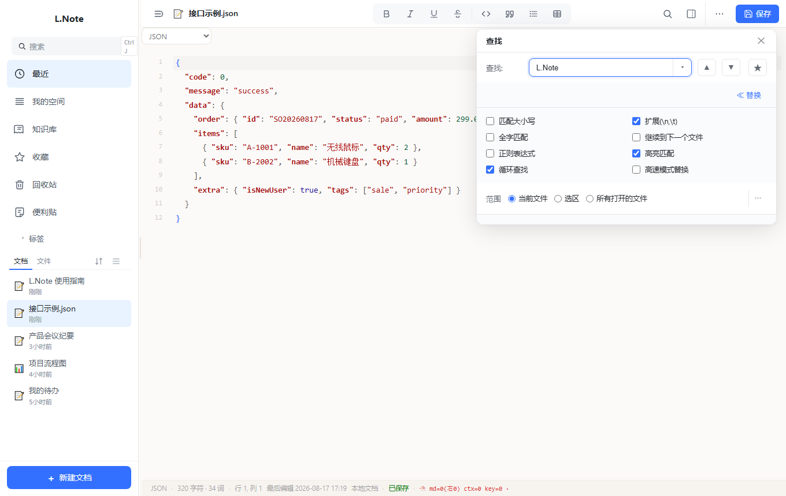
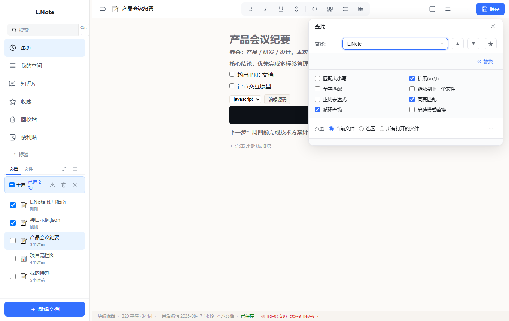
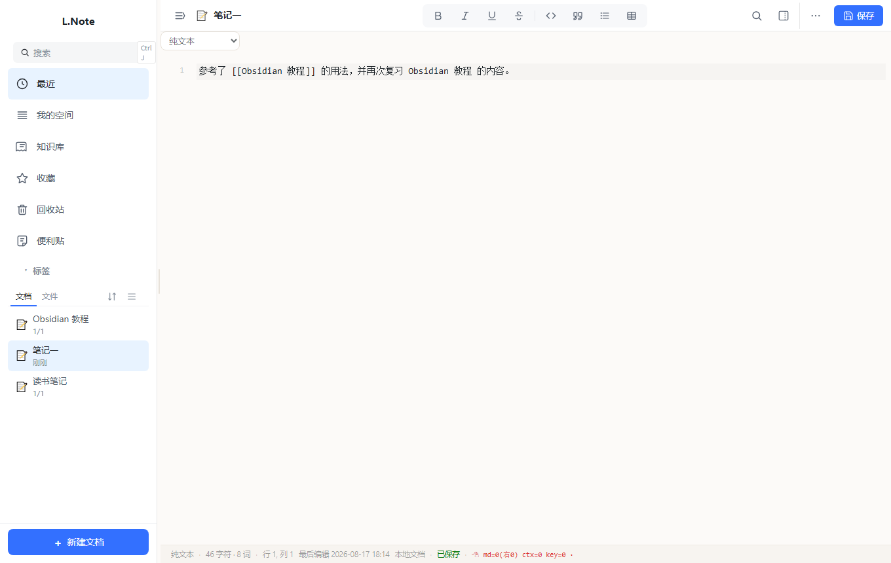

首次运行提示：当前版本未做代码签名，Windows SmartScreen 可能提示「未知发布者」。点击「更多信息」→「仍要运行」即可正常使用；核对上方 SHA256 可确认文件完整安全。
功能特性
📝 编辑器（CodeMirror 5）
- 12 种语言语法高亮：Markdown / JSON / XML / HTML / JavaScript / Python / CSS / SQL / Shell / YAML / C·Java·C++ / Mermaid
- 编辑辅助：括号自动配对与补全、代码折叠、多光标编辑、行号点击选行、自动缩进、智能补全
- 体验细节：查找历史记忆、深浅色主题切换、状态栏实时显示行/列/编码/语言
👁 文档与实时预览
- Markdown 实时预览：marked 渲染 + highlight.js 代码高亮 + KaTeX 数学公式，编辑即所见
- Mermaid 图表：流程图 / 时序图 / 思维导图实时渲染，支持缩放平移
- 思维笔记（富文档）：Notion 风格块编辑器（标题 / 引用 / 待办 / 代码 / 表格 / 图片等块），飞书式左侧大纲（目录 + 搜索）
- Bubble Menu：选中文本自动浮出快捷排版工具条，无需记忆快捷键
🛠 工具集
- JSON / XML：格式化与压缩；混合文本中可只序列化 JSON 片段（含半截 JSON），并高亮标记问题位置
- 文本处理：转义/反转义、Unicode↔中文、Base64、URL 编码、大小写转换、全角半角、去重、缩进计算
- 查找/替换（仿 EverEdit）：正则支持、全文档高亮、批量替换、多行匹配、规则收藏
- 更多工具：文件比较（双栏行级 diff）、编码转换、时间戳工具、代码段插入、剪贴板历史、图片查看器（缩放/平移）
💾 磁盘文件与数据
- 本地文件集成：打开/导入本地文件，Ctrl+S 直接覆盖保存；仅首次保存才弹「另存为」
- 自动同步：外部软件修改文件后，重新打开或窗口重新聚焦时自动读取磁盘最新内容
- 智能去重：按「完整路径 + 文件名」判断，重复导入不会产生重复条目；文档信息面板显示文件所在位置
- 隐私安全：数据全部保存在本机（localStorage），无需联网、无账号、不上传任何数据
🔗 反向链接（Obsidian 风格）
- 内部链接：正文输入
[[文档标题]] 即建立链接（支持 [[标题|别名]]），编辑器内实时高亮、可点击跳转
- 智能识别：自动扫描全部文档，区分「链接当前文件」与「提到当前文件名」（潜在引用）
- 一键转链接：潜在引用可一键「转为链接」，正文自动改写为
[[标题]]，面板实时刷新
- 计数徽标：右上角「文档信息」按钮显示红色计数徽标，有反向链接时面板自动展开
界面预览

主界面 · 文档列表 + 编辑器
点击图片可放大查看

Markdown 实时预览 · 所见即所得
点击图片可放大查看

JSON 编辑器 · 语法高亮与格式化
点击图片可放大查看

查找 / 替换 · 正则与全文档高亮
点击图片可放大查看
富文档（思维笔记）· 块编辑器
点击图片可放大查看

批量管理 · 多选与批量操作
点击图片可放大查看

反向链接 · 徽标计数 + 自动展开
点击图片可放大查看
快速开始
安装与运行
- 双击 L.Note-v0.21.7-win64.exe，免安装直接运行
- 依赖 Edge WebView2 运行时（Win11 自带，Win10 一般已预装）
- 数据保存在本机浏览器存储，卸载/换机前请先导出备份
验证文件完整性
- 复制上方 SHA256 值
- 在 exe 所在目录执行：
- certutil -hashfile L.Note-v0.21.7-win64.exe SHA256
- 比对输出哈希是否一致
更新日志
v0.21.7
- 顶部格式工具栏（B/I/U/删除线/行内代码/引用/列表/表格）仅在打开富文本文档时显示，其他格式自动隐藏
- 修复隐藏格式工具栏后顶栏右侧按钮（搜索 / 信息面板 / 保存等）左移的问题
v0.21.6
- 文档地图升级为「真实文本缩略图」：视口内渲染文档真实文字（迷你字号字符，可辨识段落形状与内容密度），视口外保留行长度色块
v0.21.5
- 新增 PDF 查看器：文件树双击 /「打开方式」直接打开 .pdf，pdf.js 懒加载渲染、翻页缩放、文本复制、提取为文本
- 新增 Word 文档查看与导入：.docx / .doc 模态查看、一键导入富文档 / Markdown
- 新增文档地图（小地图）：编辑器右侧 130px 代码小地图，视口同步、点击拖拽跳转
- 图片查看器升级为图片编辑器：旋转翻转、裁剪、尺寸调整、滤镜、撤销/保存
- 新增文件关联注册脚本 register-file-assoc.ps1（仅写 HKCU，无需管理员）
- 新增 JSON 结构折叠（json-brace / json-auto）；块编辑器图片增强（更换图片、失败重试）
- 启动性能优化：Mermaid / PDF.js / mammoth 拆分为懒加载包，启动大幅提速
v0.21.4
- 新增「打开所在文件夹」：文档菜单 / 顶栏菜单一键在系统文件管理器中定位文档
- 修复从 Excel 复制内容粘贴被误识别为图片的问题（粘贴改为文本优先）
- 新增选中文本右键菜单「翻译」功能（桌面版，中英互译）
v0.20.44
- 批量删除完成后自动退出批量模式，关闭顶部批量工具栏
- 文档去重改为按完整路径+文件名判断，重复导入不再产生重复条目
- 文档信息面板新增「位置」，显示文件所在目录
- 已有磁盘文件 Ctrl+S 直接覆盖保存；首次保存才弹另存为
- 重新打开文档、窗口重新聚焦时自动读取磁盘最新内容
- 修复启动瞬间左侧闪现空白框
- JSON 混合序列化（含半截 JSON）+ 问题位置高亮标记
- 查找/替换弹窗修复：可拖动、导航按钮重设计、结果定位准确
- 文档排序增加开关，默认关闭（列表顺序稳定）
- 桌面版导入改用原生文件选择器，自动关联磁盘路径